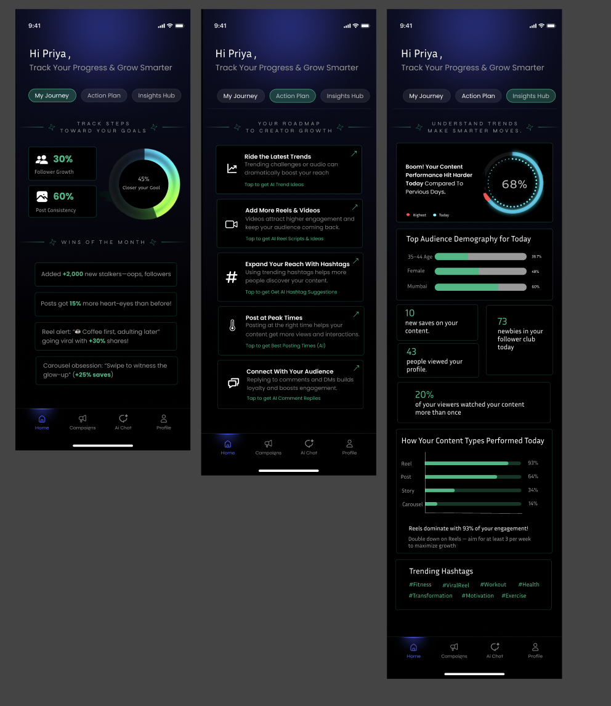

Creators joined, then stopped using it.
- Nurdd connects creators and brands. Brands come for active creators, so retention was the core problem.
- Creators saw their numbers but didn't know what to do with them.
Creators joined Nurdd but didn't come back. Two pieces of work: a dashboard to bring them back, and free tools to bring new people in.

The dashboard is a Figma design and its launch isn't confirmed. Next time I'd test it with 5–6 creators before polishing, and track weekly returning creators.